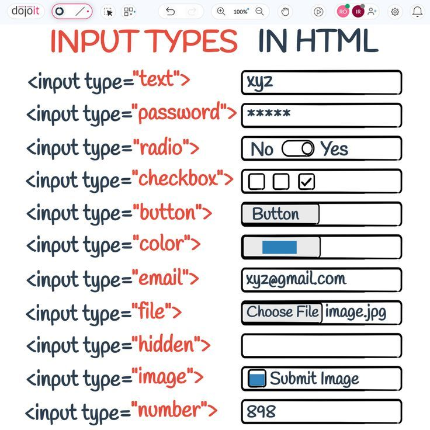
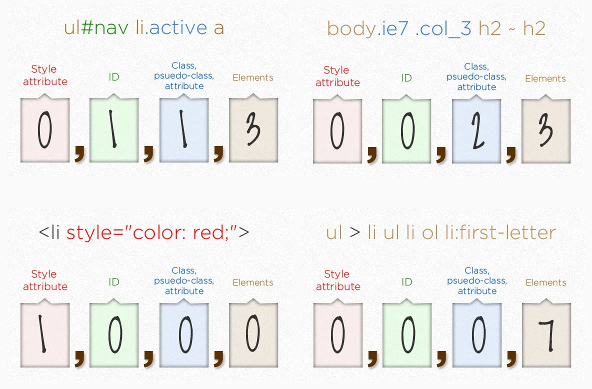

• Attributes
En HTML, un atributo es una característica o propiedad de un elemento que proporciona información adicional sobre ese elemento. Los atributos se definen dentro de la etiqueta de apertura de un elemento, generalmente en forma de pares clave-valor, donde la clave es el nombre del atributo y el valor está asociado con el comportamiento o características específicas del elemento. Por ejemplo, en el caso de un enlace, el atributo href especifica la URL a la que debe redirigir el enlace. Los atributos comunes incluyen src (fuente de una imagen), alt (texto alternativo para una imagen), id, class, style, entre otros.

• Box Model
El Box Model es un concepto fundamental en CSS que describe cómo se estructura cada elemento en una página web. Cada elemento HTML se representa como una caja rectangular, y el Box Model define cómo se calcula el espacio que ocupa este elemento en la página. El Box Model consta de cuatro componentes: el contenido (el área interna del elemento), el padding (espacio entre el contenido y el borde), el border (el borde alrededor del padding) y el margin (el espacio exterior entre el borde y otros elementos). El Box Model afecta al diseño y la disposición de los elementos, lo que hace importante comprender cómo manejarlo para lograr un diseño web preciso y responsivo.

• Cascading Styles
El principio de los Estilos en Cascada es una característica esencial del lenguaje CSS. Define cómo se aplican las reglas de estilo a los elementos HTML cuando existen múltiples reglas que podrían afectarlos. El término "cascada" hace referencia a la prioridad de las reglas CSS. Si varios estilos aplican a un mismo elemento, CSS resolverá cuál aplicar según una jerarquía que se basa en la especificidad de los selectores, el orden en que se encuentran en el archivo CSS, y la importancia de las reglas (mediante !important). Este principio permite a los desarrolladores escribir estilos más flexibles y reutilizables, evitando sobrescribir manualmente los estilos de cada elemento.

• Classes
En HTML y CSS, una clase es un selector que permite agrupar elementos con características similares. Las clases se definen con un punto (.) en CSS y pueden ser asignadas a cualquier número de elementos HTML. Al usar clases, puedes aplicar el mismo conjunto de estilos a varios elementos de la página sin tener que escribir reglas de estilo individuales para cada uno. Las clases proporcionan una forma flexible y eficiente de diseñar páginas web, permitiendo la reutilización de estilos y facilitando la organización del código. Ejemplo: .boton { color: red; } cambiaría el color de todos los elementos con la clase boton a rojo.

• Comments
Los comentarios en HTML y CSS son fragmentos de código que se utilizan para explicar, describir o marcar secciones de código sin que se ejecuten en el navegador. Los comentarios son útiles para hacer que el código sea más comprensible tanto para otros desarrolladores como para uno mismo. En HTML, los comentarios se escriben entre , mientras que en CSS se utilizan /* al inicio y */ al final. Los comentarios son ignorados por el navegador, por lo que no afectan la funcionalidad del sitio web, pero mejoran la legibilidad y el mantenimiento del código.
• CSS
CSS es un lenguaje de hojas de estilo utilizado para describir la presentación de un documento HTML o XML. Permite separar el contenido de la estructura, es decir, los elementos HTML, de la apariencia visual, como colores, fuentes, márgenes, espaciados y otros estilos de diseño. El uso de CSS permite que los sitios web sean más fáciles de mantener y modificar, además de hacerlos visualmente atractivos y adaptables a diferentes dispositivos (responsive design). Con CSS, los desarrolladores tienen un control total sobre el diseño de la página sin tener que alterar el HTML, lo que facilita una separación clara entre el contenido y el diseño.

• DevFT Tool
DevFT es una herramienta que facilita la inspección y depuración del código front-end en desarrollo. Se utiliza principalmente para ayudar a los desarrolladores a analizar y modificar elementos HTML y CSS en tiempo real en el navegador. Herramientas como la DevTools de Google Chrome permiten a los usuarios inspeccionar el código fuente, verificar los estilos aplicados, y realizar pruebas rápidas sin necesidad de modificar directamente el código fuente del proyecto. Estas herramientas son cruciales para el desarrollo web porque permiten detectar errores, mejorar el rendimiento de la página y probar cambios de diseño de manera instantánea.
• Displays
En CSS, display es una propiedad que controla cómo se debe mostrar un elemento en la página web. Esta propiedad determina el tipo de caja que se utiliza para un elemento. Los valores comunes de display incluyen block (hace que el elemento ocupe toda la línea disponible), inline (permite que el elemento ocupe solo el espacio necesario sin forzar saltos de línea) y inline-block (una mezcla entre inline y block). Además, otros valores como flex y grid permiten crear diseños complejos y responsivos, utilizando técnicas modernas de maquetación que ajustan la disposición de los elementos dentro de un contenedor.
• Flexbox
Flexbox es un modelo de diseño en CSS que permite distribuir el espacio entre los elementos de un contenedor y alinearlos de manera eficiente, incluso cuando su tamaño es desconocido o dinámico. Este sistema facilita la creación de layouts complejos con alineación y distribución de espacio entre elementos sin tener que usar técnicas complicadas como los floats. Flexbox introduce propiedades como display: flex, justify-content, align-items, y flex-direction, que permiten controlar la orientación y alineación de los elementos dentro del contenedor de manera flexible.

• Float
El atributo float en CSS se utiliza para colocar elementos hacia la izquierda o derecha dentro de su contenedor. Este valor hace que los elementos floten al lado de otros elementos, permitiendo que el contenido fluya alrededor de ellos. Sin embargo, el uso de float puede ser complicado, ya que puede afectar el flujo de otros elementos en la página y requiere técnicas adicionales como el "clearfix" para evitar que los elementos flotantes se desborden o superpongan.

• Forms
Los formularios en HTML permiten a los usuarios enviar datos a un servidor. Están compuestos por diferentes elementos como campos de texto, botones, listas desplegables, casillas de verificación, entre otros. Los formularios son esenciales para la interacción en sitios web, permitiendo desde la creación de cuentas hasta la realización de compras en línea. En HTML, los formularios se definen con la etiqueta

• GitHub
GitHub es una plataforma de desarrollo colaborativo basada en Git, un sistema de control de versiones. Permite a los desarrolladores almacenar sus proyectos, colaborar con otros y realizar un seguimiento de los cambios a lo largo del tiempo. GitHub es ampliamente utilizado en el mundo del software para gestionar proyectos de código abierto y privado, facilitando la colaboración entre equipos y la integración continua.

• GitHub Pages
GitHub Pages es un servicio ofrecido por GitHub que permite a los desarrolladores alojar sitios web directamente desde sus repositorios de GitHub. Este servicio es ideal para proyectos estáticos como portfolios, documentación o blogs, y permite mostrar proyectos de manera fácil sin necesidad de servidores externos. Los usuarios pueden configurar GitHub Pages con HTML, CSS y JavaScript y acceder a ellos con una URL personalizada.

• HTML
HTML es el lenguaje de marcado estándar utilizado para crear páginas web. HTML define la estructura y el contenido de una página web mediante etiquetas, como "h1" para títulos, "p" para párrafos, "a" para enlaces, y muchas otras. HTML es la base de la mayoría de los sitios web y permite organizar el contenido de manera jerárquica y semántica. Aunque HTML por sí solo no controla la apariencia de la página, se complementa con CSS para los estilos visuales y JavaScript para la interacción dinámica.

• ID
El ID en HTML es un atributo único utilizado para identificar un elemento dentro de una página web. A diferencia de las clases, que pueden ser reutilizadas en múltiples elementos, un ID debe ser único en la página. Se utiliza comúnmente para aplicar estilos específicos a un solo elemento mediante CSS o para seleccionar un elemento con JavaScript.
• Inline Styles
Los Inline Styles son una forma de aplicar estilos directamente a un elemento HTML dentro de la propia etiqueta del elemento usando el atributo style. Esta práctica no es recomendada para proyectos grandes, ya que puede hacer que el código sea difícil de mantener, pero puede ser útil para aplicar estilos rápidos o específicos a un único elemento sin necesidad de modificar un archivo CSS externo.

• Inputs
El término inputs se refiere a los elementos HTML que permiten a los usuarios introducir datos en una página web, como los campos de texto, botones de opción, casillas de verificación, entre otros. Los formularios HTML utilizan estos elementos para recolectar datos de los usuarios, y cada tipo de input tiene un propósito diferente, como el tipo text para texto, password para contraseñas o radio para opciones de selección única.

• Lists
En HTML, las listas se utilizan para agrupar elementos relacionados. Existen tres tipos principales de listas: listas ordenadas "ol" que numeran los elementos, listas desordenadas "ul" que usan viñetas, y listas de definición "dl" que se utilizan para términos y descripciones. Las listas ayudan a organizar la información y hacerla más accesible y comprensible para los usuarios.
• Margin
El margin es un espacio en blanco que rodea un elemento en su exterior, separándolo de otros elementos. En CSS, se puede especificar el margen de un elemento usando la propiedad margin, y se pueden definir márgenes específicos para cada lado del elemento (superior, inferior, izquierdo y derecho). El margen afecta la distancia entre el borde del elemento y los elementos vecinos.

• Padding
El padding es el espacio entre el contenido de un elemento y su borde. Al igual que el margen, se puede definir un padding específico para cada lado del elemento (superior, inferior, izquierdo y derecho). El padding ayuda a crear espacio interno dentro del elemento, evitando que el contenido se pegue al borde del mismo. Es una propiedad crucial para controlar la apariencia de los elementos y su espaciado.
• Positions
La propiedad position en CSS controla el posicionamiento de un elemento en la página. Los valores comunes son static (por defecto, los elementos se colocan en el flujo normal del documento), relative (el elemento se posiciona relativo a su posición original), absolute (el elemento se posiciona respecto al contenedor más cercano con position: relative), fixed (el elemento se fija en una posición específica en la ventana) y sticky (el elemento se mantiene en su lugar hasta que se desplace fuera de la ventana).

• Semantic HTML
Semantic HTML se refiere a usar etiquetas HTML que tienen un significado claro sobre su contenido. Ejemplos de etiquetas semánticas son "article", "section", "nav", y "header". Utilizar etiquetas semánticas mejora la accesibilidad, el SEO y la mantenibilidad del código, ya que proporcionan un contexto más claro sobre la estructura y el propósito de la página.

• Specificity
La especificidad en CSS es un sistema que determina qué reglas de estilo se aplican a un elemento cuando hay conflictos entre reglas. La especificidad se calcula en función del tipo de selector: los selectores de ID tienen mayor especificidad que los selectores de clase, que a su vez tienen mayor especificidad que los selectores de etiqueta. Entender la especificidad es esencial para controlar el orden de aplicación de los estilos en páginas complejas.

• Z-Index
El z-index es una propiedad de CSS que controla la apilación de los elementos en el eje Z (profundidad). Los elementos con un z-index mayor se apilan sobre aquellos con un z-index menor. Esta propiedad solo afecta a los elementos posicionados (con position: relative, absolute, fixed, o sticky) y permite crear efectos de superposición en el diseño de la página.